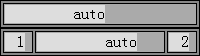
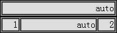

无
在 IE6 IE7 IE8(Q) 中，当表格的宽度大于列宽度之和时，表格会重新计算各列宽度，但单元格的实际可用的宽度仍然为原设定值。
这个问题将导致 TD 元素内文本的对齐依据在各浏览器中产生差异。
| IE6 IE7 IE8(Q) |
|---|
分析以下代码：
<style>
table { width:200px; background:#888; border:1px solid black; }
td { width:100px; background:#AAA; text-align:right; border:1px solid black; }
div { background:#DDD; }
</style>
<table>
<tr>
<td style="width:100px;">
<div>auto</div>
</td>
</tr>
</table>
<table>
<tr>
<td style="width:20px;">
<div>1</div>
</td>
<td>
<div>auto</div>
</td>
<td style="width:20px;">
<div>2</div>
</td>
</tr>
</table>
上面代码中第一个表格有一行一列，单元格的宽度为100px。第二个表格内有一行三列，表格宽度为200px，单元格宽度为20px、100px、20px。在各浏览器中效果如下：
| IE6 IE7 IE8(Q) | IE8(S) Firefox Chrome Safari Opera |
|---|---|
|  |  |
可见：
【注】此现象同时存在于 "table-layout:fixed" 中。
不要同时为 TABLE 元素及其内部各列显式设置宽度，当需要应用各列设定宽度时，TABLE 元素的宽度应保持默认的 "auto" ，当需要限定 TABLE的宽度时，应至少保证有一列的宽度为默认的 "auto" 。
| 操作系统版本: | Windows 7 Ultimate build 7600 |
|---|---|
| 浏览器版本: |
IE6 IE7 IE8 Firefox 3.6.2 Chrome 5.0.360.0 dev Safari 4.0.5 Opera 10.51 |
| 测试页面: | td_resize.html |
| 本文更新时间: | 2010-06-21 |
cell table 单元格 表格 align 对齐 TD